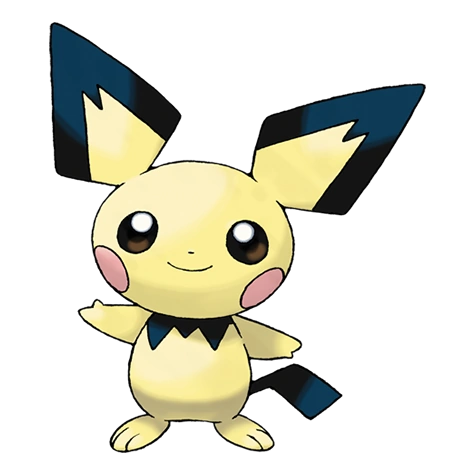

Pichu (Japanese: ピチュー Pichuu) is an Electric-type Baby Pokémon introduced in Generation II.
Biology
Physiology
Pichu are very small, plump, yellow rodent-like Pokémon. It bears a similar appearance to its evolved form Pikachu, but varies in a number of ways. Pichu have diamond-shaped ears on the top of their head, with the edges being black and the interior yellow. Underneath their head is a black pattern, that somewhat resembles a collar. Their tails are completely black, and resemble a small lightning bolt, similar to its evolved forms, which are larger. Pichu also have round, pink sacs on their cheeks, used for storing electricity.
Natural abilities
Pichu have the special ability Static. This allows for a 30% chance that an opponent will become paralyzed if it lands a physical attack on Pichu. Pichu, like its other forms, is capable of storing electricity in the pink sacs on its cheeks. Being a baby Pokémon, however, Pichu can not store as much electricity as its evolved forms. It will shock itself if any electricity leaks out of its cheeks.
Evolution
Pichu evolves into Pikachu by leveling it up with max Friendship. Pikachu then evolves into Raichu when exposed to a Thunderstone.
Game info
Pichu first appeared in the Generation II games. They were in Gen II through the Mystery Egg obtainable, but also by breeding a Pikachu, until the release of Pokémon Diamond and Pearl, where they can be caught in Trophy Garden. They can be bred with Volt Tackle if the mother Pikachu holds a Light Ball.
Trivia
Pichu is the only Generation II Pokémon and the first non Generation I Pokémon to be playable in the Super Smash Bros. series.Pichu is the first Baby Pokémon in Pokédex order. Cleffa, Igglybuff and Togepi come directly after.Pichu is one of the easiest Pokémon to catch in Pokémon Ranger along with Seedot and Magikarp with only 1 loop.Pichu is the player's partner Pokémon in Pokémon Ranger: Guardian Signs.Pichu is shown in the Anime to damage itself when it uses electric shocks. In a movie short it is shown to KO the Pichu Brothers. However, an electric shock on a Pichu would not do much damage to it, even if it hurts itself. This was also seen in Super Smash Bros..In the movie Arceus and The Jewel of Life, the Pichu that appeared was the Spiky-eared.Pichu is the only Electric-type Pokémon to learn Present via by breeding.Pichu can learn Volt Tackle when its level 1 by having a female Pikachu breeding with a male Pikachu, or a Ditto and the male/female Pikachu has to be holding a Light Ball in order to do this.As a baby, it is the fastest Pokémon.Pichu has three forms, Spiky-eared Pichu, Ukelele Pichu and Pikachu-colored Pichu.Pichu is the first Pokémon character in Super Smash Bros. to not introduce a new type as the Electric-type was already used by Pikachu.